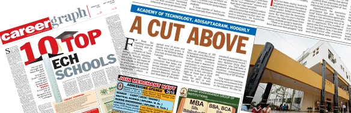

Achievements

2009
.webp)
“… but the one that comes out on top is the Academy of Technology, Adisaptagram, Hooghly, not
only because of its infrastructure and placement record but also the steady rise in the opening
and closing rankings in the matrix and a growing reputation among students”. The Telegraph.
Details:See More
Details:See More
2010
.webp)
“…Academy of Technology (AOT) at Adisaptagram in Hooghly district has joined the top league of
tech schools in Bengal…”. The Telegraph.
Details:See More
Details:See More
2017
.webp)
Academy of Technology makes its place with premier institutes of West Bengal in MHRD National
Institutional Ranking Framework for Engineering Institutions in India, 2017.
The State Ranking of AOT is 8th, where IIT Kharagpur is 1st, Jadavpur University is 2nd and
IIEST Shibpur is 3rd.
Academy of Technology adjudged 152nd in the country.
Details:See More
Details:See More
2017
.webp)
Academy of Technology acknowledged as 3rd among the list of "Best Individual Private Engineering
Colleges" - Report from the MAKAUT Educational Conclave - TIMES OF INDIA (28th March 2017)
Details:See More
Details:See More
2018
Once again Academy of Technology makes its place with premier institutes of West Bengal in MHRD
National Institutional Ranking Framework for Engineering Institutions in India, 2018.
The State Ranking of AOT is 8th, where IIT Kharagpur is 1st, Jadavpur University is 2nd and
IIEST Shibpur is 3rd.
Academy of Technology adjudged 152nd in the country.
Details:See More
Details:See More